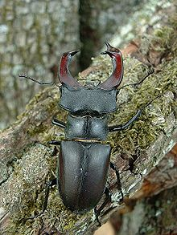

News
First_release
First release of the distribution today!
Today we release the stag beetle (Lucanus cervus) release. It is our first official release and we look forward to hear what the community thinks about it. Go on and try it and tell us what you think!
 Lucanus cervus is the best-known species of stag beetle (family Lucanidae), and is sometimes referred to simply as the stag beetle. It is the largest beetle in Europe. It lives in holes in old trees and dead trunks, in the forest as well as in groves. Forest management, in eliminating old trees and deadwood, eliminates at the same time the habitat and food of this species. Once quite common, the population of the Lucanus cervus, along with that of other species of beetles which feed on wood, is in steep decline, and has been listed globaly as a threatened species. In Sweden the stag beetle is known as Ekoxe and is the province animal of Blekinge one of Swedens 25 provinces.
2010-06-02
First version of the site is online
Today we pushed the first version of this website for publishing.